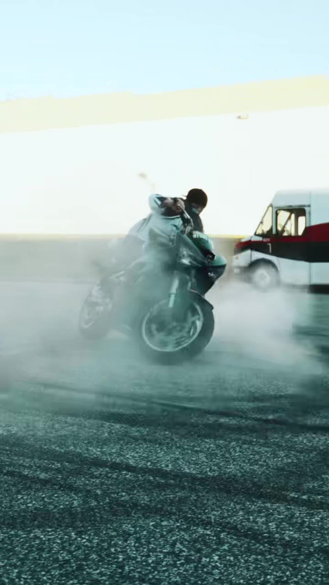

How the dirt bike video runs across Instagram and Facebook. Paid ads use a 10-second cut of the calm shots. The full ride goes up as a regular Reel. Swipe sideways to see each placement.
Paid ads
Calm shots only: the back graphic, the sleeve, the kicks, the crew, two smiles, then the jersey card. Every button goes to the jersey page on gvosound.com.
Reels0:10 · sound on
GVO
gvo.soundSponsored
Pain is temporary. Pride is forever. The GV★SD dirt bike jersey is out now. more
Cards 3–4 in the set: the sleeve close-up and the crew on the road.
Facebook carousel1:1 cards · jersey, back graphic, more
Organic post
The full 58-second edit on @gvo.sound, posted as a regular Reel. Don't boost it: a boost is an ad, and the same rules apply.

Reels0:58 · posted, not boosted
GVO
gvo.soundFollow
Pain is temporary. Pride is forever. The GV★SD dirt bike jersey, now in store and online. Link in bio.
[Track name] · [Artist]
Organic Reel9:16 · full 58-second edit, posted not boosted
Why two versions
Meta doesn't allow ads that show dangerous driving or stunts outside professional or fictional settings. Street wheelies and burnouts would likely get the ad rejected, and a rejection on a brand-new ad account can get the account restricted. The full edit still gets seen as a regular post.
Ad copy
Primary text
Pain is temporary. Pride is forever. The GV★SD dirt bike jersey is out now. Shop online or pull up to 109 Gibralter Ave.
Headline
Pain Is Temporary Dirtbike Jersey
Description
$65 · Sizes XS–4XL
Button
Shop now → gvosound.com/shop/pain-is-temporary-dirtbike-jersey
Before it runs
Music: confirm the track is licensed or a GVO artist's. Unlicensed music gets ads muted or pulled.
Riders: written OK from everyone who appears.
Budget: $10–15 a day for 7 days, with tracking on the jersey link, then decide whether to spend more.